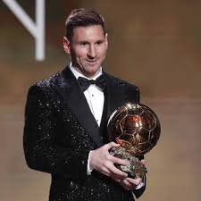
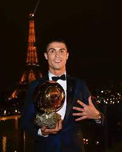
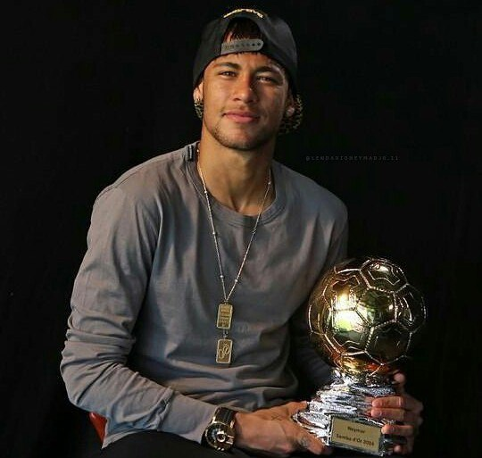
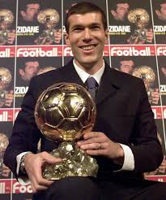
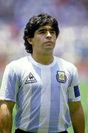
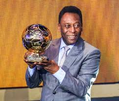
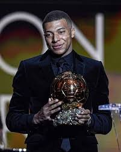

Відомі гравці
Ось список кількох відомих футболістів, які залишили значний слід в
історії футболу:
1. Ліонель Мессі

- Країна: Аргентина
- Позиція: Нападник
-
Досягнення: Ліонель Мессі — семиразовий володар "Золотого м'яча"
(найкращий гравець світу), один із найтитулованіших гравців за всю
історію футболу. Він відомий своїм технічним дриблінгом, точністю ударів
і неймовірною швидкістю мислення на полі. Мессі багато років грав за
іспанську "Барселону", а тепер грає за "Інтер Маямі" та збірну
Аргентини, з якою виграв Кубок світу у 2022 році.
2. Кріштіану Роналду

- Країна: Португалія
- Позиція: Нападник
-
Досягнення: П'ятикратний володар "Золотого м'яча", Кріштіану Роналду
вважається одним з найкращих гравців усіх часів. Він грав за такі клуби,
як "Манчестер Юнайтед", "Реал Мадрид", "Ювентус" та "Аль-Наср". Відомий
своєю атлетичністю, силою удару і здатністю забивати головою. Роналду
також є найкращим бомбардиром в історії міжнародного футболу.
3. Неймар

- Країна: Бразилія
- Позиція: Нападник
-
Досягнення: Неймар — один з найяскравіших атакуючих гравців сучасного
футболу. Він почав свою кар'єру в "Сантосі", а потім продовжив виступати
за "Барселону" і "Парі Сен-Жермен". Відомий своїми неймовірними
дриблінгами і здатністю змінювати хід гри в один момент. Неймар — один
із лідерів збірної Бразилії.
4. Зінедін Зідан

- Країна: Франція
- Позиція: Півзахисник
-
Досягнення: Зідан — легенда французького футболу, чемпіон світу (1998) і
Європи (2000). Він був відомий своїм неймовірним контролем м'яча,
баченням поля та технікою. Зідан найбільше грав за "Ювентус" і "Реал
Мадрид". Після завершення кар'єри гравця він став успішним тренером
"Реала", вигравши три Ліги чемпіонів поспіль.
5. Дієго Марадона

- Країна: Аргентина
- Позиція: Нападник/півзахисник
-
Досягнення: Марадона вважається одним із найкращих гравців в історії
футболу. Його найбільш знаковим досягненням стало переможне проведення
збірної Аргентини до титулу чемпіонів світу у 1986 році. Відомий завдяки
"Голі століття" і легендарній "Руці Бога". Грав за "Барселону", "Наполі"
та інші клуби.
6. Пеле

- Країна: Бразилія
- Позиція: Нападник
-
Досягнення: Пеле — триразовий чемпіон світу у складі збірної Бразилії
(1958, 1962, 1970), що робить його одним із найуспішніших гравців в
історії футболу. Відомий своєю неймовірною майстерністю в атаці,
швидкістю і здатністю передбачати розвиток гри. Його ім'я є синонімом
футболу.
7. Кіліан Мбаппе

- Країна: Франція
- Позиція: Нападник
-
Досягнення: Один із найперспективніших гравців сучасності, Мбаппе вже у
19 років виграв чемпіонат світу у складі збірної Франції (2018). Грає за
"Парі Сен-Жермен" і відомий своєю швидкістю, технікою та точністю
ударів. Його часто порівнюють з Мессі та Роналду як потенційного
спадкоємця їхньої величі.
Ці футболісти відомі у всьому світі та мають величезний вплив на розвиток
футболу. Їхні імена асоціюються з великими досягненнями і незабутніми
моментами в історії спорту.